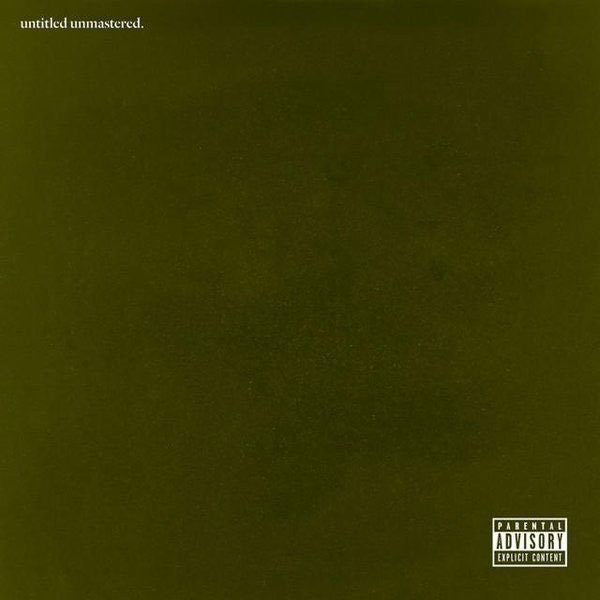

| Album |
Album Details |
Album Cover |
| Section.80 |
- Released July 2, 2011
- Label: Top Dog Entertainment
- Format: CD, digital download
|
 |
| Good Kid m.A.A.d City |
- Release: October 22, 2012 (US)
- Label: Top Dawg, Aftermath, Interscope
- Format: CD, LP, digital download
|
|
| To Pimp a Butterfly |
- Release: March 16, 2015 (US)
- Label: Top Dog Entertainment
- Format: CD, LP, digital download
|
 |
| Untitled Unmastered |
- Released: March 4, 2016
- Label: Top Dawg, Aftermath, Interscope
- Format: CD, digital download
|
 |
| D*MN |
- Release: April 14, 2017 (US)
- Label: Top Dog Entertainment, Aftermath, Interscope
- Format: CD, digital download, LP
|
|